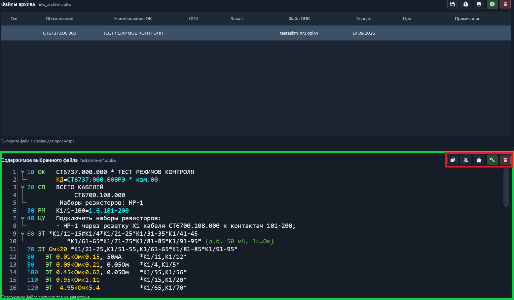
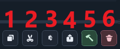
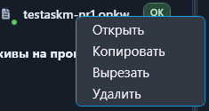

Операции с файлами архива
Разверните архив в дереве или выберите запись в таблице «Файлы архива». Содержимое выбранной программы контроля откроется в нижней части окна.

Доступные действия
- Открыть в текстовом редакторе — открывает доступный для редактирования файл проверки.
- Копировать — помещает файл в буфер обмена архивов.
- Вырезать — подготавливает файл к переносу в другой архив.
- Вставить — добавляет скопированный или вырезанный файл в выбранный архив.
- Конвертировать в PKW — сохраняет программу контроля отдельным файлом *.pkw.
- Запустить в исполнителе — передаёт программу контроля на выполнение.
- Удалить файл — удаляет выбранную программу контроля после подтверждения.
Для файлов проверки дополнительно доступна повторная проверка. Набор действий зависит от типа файла и прав текущего пользователя.

